Photography · · 7 min read
Ann Arbor and Ypsilanti, Frame by Frame
The 25 frames I added to my gallery recently from Ann Arbor and Ypsilanti.
Photograph © Ken Reid
Ann Arbor and Ypsilanti, Frame by Frame
Sometimes when you have the urge to go do some photography, the weather stops you in your tracks, or your appointment in 1.5 hours, or the list of things you should be doing instead. I try to combat this by lowering my expectations - I can't frequently chase sunsets and go for shots that require a lot of time and patience, sometimes you gotta just take some photos in your backyard.
Other times, you are asked to take some photos for an event, and you manage to take some that appeal to your "artsy" photography, not just "acceptable" ones that you pass on to friends but don't post to your gallery. Nearly all of these ones are plants, and a lot of them are wet, and considering I generally don't care for taking photos of flowers, plants and such, nor do I enjoy getting my camera wet, I hope it tells you that I really stepped out of my comfort zone here to get some photography hours in. The categories I made for my gallery include landscapes, urban decay and pets as what I shoot, and this batch has no landscapes, no decay and no pets.
Quick jargon guide
- Original: the full-size file, as opposed to the 400-pixel thumbnail this page shows.
- F-stop: the setting for how wide the lens opens. A low f-stop lets in more light and leaves only a thin slice of the scene sharp, front to back, so the background goes soft.
- Black level: the darkest tone in a photo. Raising it turns true black into a dark grey, for a faded, matte look.
- Silhouette: a subject shot dark against a bright background, so you get its outline and none of its detail.
- Color grading: shifting a photo's colours after it's taken to set a mood, like the orange sky in 510.
- Lossless: compressed without throwing anything away, so the file opens pixel for pixel as it was saved.
The originals are beefy - in file size, that is. The 25 of them come to 695 MB on the GitHub release where they live, from 4.7 MB for frame 510 up to 40 MB for 512. The high resolution switch at the top of this post is there if you want all of that, and best left alone on a phone plan. Clicking a single frame opens just its original.
Ypsilanti
Image 500 is a portrait. A friend with colourful hair, at an event playing guitar. I personally always feel anxious playing music in public, but both my wife and many of her friends are musicians, so playing in public is kind of their thing. I hope I didn't add too much stress to their playing by pointing my camera at them. I wanted to take photos of the event without people's faces - as a means of showing an event, the purpose of it, the vibes of it, without forcing people to exist on social media and websites. It also makes it easier on me - I don't feel as obligated to ask permissions to post a photo of someone if their face isn't in it. "Can I post this photo of your chin?" seems a bit unnecessary. I did ask her, mind you, and she was fine with it.
501 is a picture of a Canon. I took this partly because I love the look of a camera, ever since I got into photography I've found them aesthetically pleasing.
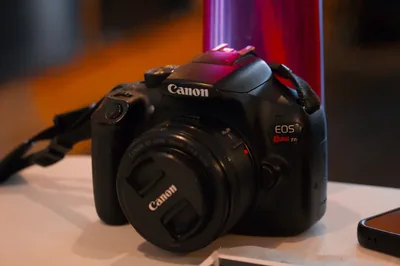
Ypsilanti wasn't on the photo map before this batch, it was about time it was added.
Green
502 to 504 are tomato plants. 502 and 503 are the leaves, wet, jagged edges picked out and everything behind them gone soft after fiddling with f-stop, and 504 has the fruit, a truss of cherry tomatoes with one of them ripe and red and the rest still green. These are my tomatoes, I've never really been into gardening but this year I grew these from seeds, and I was lucky enough to have about 120 so far with about 60-70 left to be picked. The other shots below are from around my yard, partly practicing f-stop levels, partly that I love the look of wooden fences, they give a sort of Hobbiton feel.
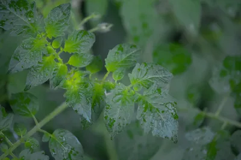
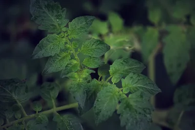
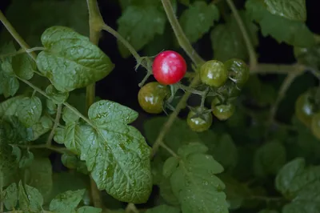
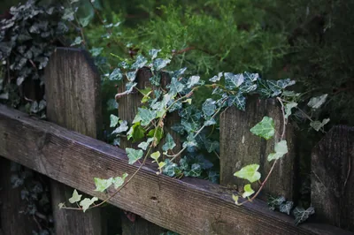
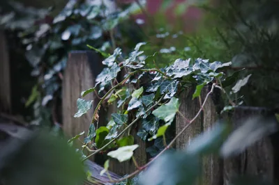
511 and 512 are these huge leaves at the end of my yard. I always like the matte-black, with a slightly raised black level, and greens tend well to a matte feel, I find. At 40 MB, 512 is the heaviest file of the 25. 513 is an example of something I like playing with: textures. They're tough to get right, and they're a good way of showing how interesting something we ignore can be. Tree trunks, grass, stones, floorboards, can all be quite interesting when you fill an entire shot with them.
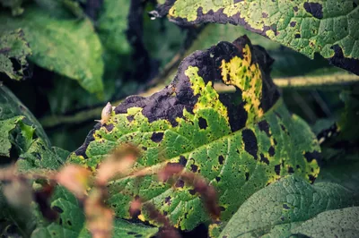
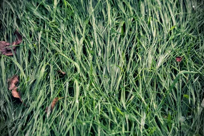
517 is the only upright frame of the lot. It's from a stump of a tree my Dad chopped down when visiting from Scotland. With permission, I should say, he didn't just go on a tree-focused-massacre. The tree was long dead from a disease spreading through our area, and a recent storm knocked it sideways, so it was dangling precariously over an area visitors park. So he chopped it down, and we've since been using it for firewood. What is left is the trunk, and my wife loves the look of the growth there, and asked me for weeks to take a few photos of it. There is something poignant about life from death. The bottom four of this section contain some examples of texture shots I was playing with that day. A firewood pile in 521 that hadn't yet been stacked, an overgrown bush in 522, and the bark of a tree (we suspect is also dying) in 523. 524 was the first sign of Fall we saw this year.
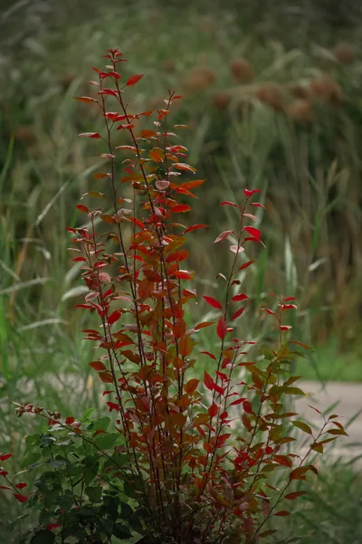
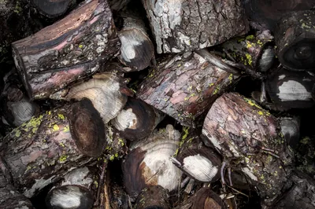
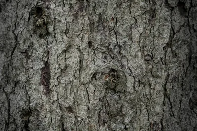
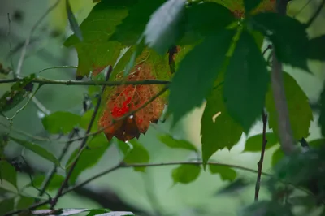
Two skies
509 and 510 are bare branches in silhouette. In 509 the sky behind them is teal, going for more of a spooky feel, while in 510 the deep orange is some fun color grading. It was a damp early Fall day but I think I successfully made it look like an American view of what Mexico looks like in films.
510 is also the smallest original, the 4.7 MB one. PNG files are lossless, and before compressing anything the format guesses each pixel from the ones next to it[1]. A sky that's the same colour all the way across is easy to guess, I guess.
Rain, and our car
515 and 516 are the rain on our windshield. It reminds me of when I was doing my undergraduate degree in a computer science class on modelling complex systems, I wrote a program (in NetLogo, anyone?) which would emulate raindrops on a windshield, I mostly did it for fun but the reason I gave in my assignment report was that if a car company was wanting to test how raindrops stick to their glass, they could use this software to simulate it, and I added buttons to "add mud" making rain stick more, then I added some rules to mess with the physics (more gravity, easterly or westerly wind, rainbow colors of rain).
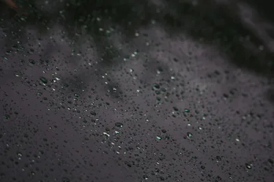
519 and 520 are grass after the rain, blades with beads of water strung along them, all dark blue-greens. I love the matte effect here.
Here is our car in our driveway. I had a feeling the lighting would work well, and I took the photo from behind a tree to give it some depth. I think it does a fair imitation of a car commercial. I promise I'm not sponsored by Toyota.
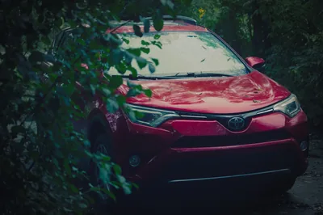
All 25 are in the gallery now, and on the map, 23 of them under Ann Arbor.
References
- Wikipedia. PNG (the section on compression: filtering, then DEFLATE). https://en.wikipedia.org/wiki/PNG